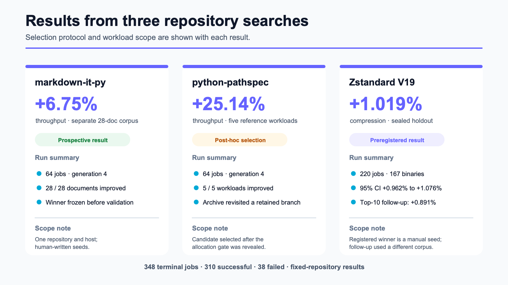
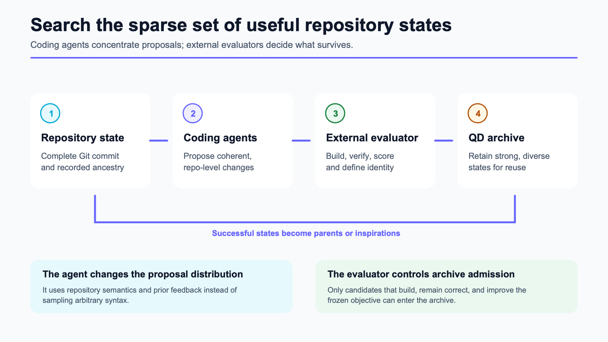
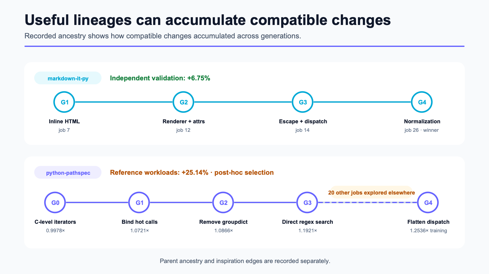
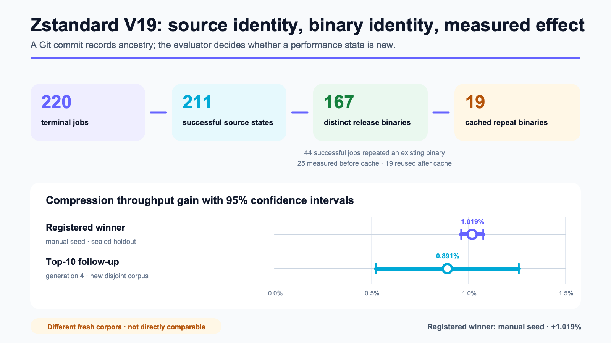

用编码智能体搜索真实代码仓库¶
Loreley 在 markdown-it-py、python-pathspec 和 Zstandard 上运行 348 个任务的结果
Loreley 在完整 Git 代码仓库上运行评估器驱动的搜索。规划智能体和编码智能体在隔离的 worktree 中提出修改。项目评估器负责构建修改后的代码、执行正确性检查，并测量实验指定的目标。通过检查的候选方案可以进入分布式质量-多样性档案库，成为后续任务的父代或灵感来源。
Git 提交用于记录源码状态和祖先关系。对于需要编译或生成产物的项目，评估器可以另外提供产物身份，例如发布版二进制文件的哈希。这样，等价产物不会重复消耗测量预算。
我们在三个代码仓库的固定版本上评估了 Loreley。三项研究共完成 348 个任务，其中 310 个成功，38 个失败。
| 代码仓库 | 搜索预算 | 活跃运行时间 | 独立结果 | 选择状态 |
|---|---|---|---|---|
markdown-it-py |
64 个任务 | 4.35 小时 | 吞吐量 +6.75% | 验证前冻结候选方案 |
python-pathspec |
64 个任务 | 3.91 小时 | 吞吐量 +25.14% | 内存分配检查失败后事后选择 |
| Zstandard V19 | 220 个任务 | 5.31 runner-hours | 压缩吞吐量 +1.019% | 预先登记的获胜方案；人工种子 |
三项研究使用不同的工作负载和选择协议。不能对表中的百分比取平均，也不能用它们估计 Loreley 在其他代码仓库上的效果。

搜索模型与评估器¶
代码仓库可能状态的空间很大。能够成功构建、通过必要测试、符合允许的修改范围并改善目标的状态很稀疏。编码智能体利用现有实现、测试、名称、类型、调用位置、性能分析数据和此前结果，提出具体的候选提交。评估器根据实验协议判断这些提交是否合格。
每个任务从搜索过程保留的某个提交开始。规划智能体检查目标、代码仓库和此前的结果。编码智能体在隔离的 Git worktree 中修改代码并创建提交。评估器随后构建、测试并测量这个 worktree。

评估器通过一个小型 Python 接口接入。下面的简化插件返回吞吐量测量结果，以及被测产物的身份：
from loreley.core.worker.evaluator import EvalFail, EvalPass
def evaluate(context):
result = build_test_and_benchmark(context.worktree)
if not result.tests_passed:
return EvalFail(kind="test", summary=result.failure)
return EvalPass(
summary="tests passed; benchmark completed",
metrics={
"name": "throughput",
"value": result.throughput,
"unit": "items/s",
"higher_is_better": True,
},
candidate_identity=f"release-binary:{result.binary_sha256}",
)
build_test_and_benchmark() 可以调用 shell 脚本、C 或 C++ 构建、Java 基准测试、容器、硬件测试平台或远程服务。这个 Python 接口不限制目标项目的实现语言。
通过检查的候选方案会进入质量-多样性档案库。档案库在不同的行为分区中保留多个高性能候选方案，而不是只维护一个当前最优方案。后续任务可以延续一条被保留的谱系，也可以使用另一条谱系中的实现作为灵感。
案例 1：markdown-it-py¶
markdown-it-py 研究使用了 64 个任务，其中包括 8 个人工种子和 56 个演化任务。最终候选方案在验证语料库打开前已经冻结。它在另一组由 28 份文档组成的语料库上将几何平均吞吐量提高了 6.75%。28 份文档的处理速度全部提高。
最终补丁累积了四代修改：
- 减少内联 HTML 解析中的字符串切片；
- 修改渲染器分派和 token 属性相关的热点路径；
- 减少 HTML 转义和分派开销；
- 增加规范化快速路径。
最终 diff 涉及 5 个文件，新增 54 行，删除 14 行。每一代修改都先通过评估器，再成为下一代的父代。候选方案在验证集揭示前已冻结，属于前瞻性选择。四代提交记录了多个兼容优化逐步累积的过程。
案例 2：python-pathspec¶
python-pathspec 研究使用了 64 个任务，其中包括 6 个人工种子和 58 个演化任务。产生最终候选方案的谱系以根版本 0.9978× 的吞吐量开始。后续几代在训练工作负载上分别达到 1.0721×、1.0866×、1.1921× 和 1.2536×。
这些修改预先绑定了热循环中的调用，移除了 groupdict()，预计算正则表达式，直接调用 search()，并将分派逻辑扁平化为预先绑定的匹配器元组。在第三代和第四代之间，系统运行了另外 20 个任务来探索其他候选方案。档案库在这段时间内保留了该谱系。

最终候选方案在 5 个参考工作负载上将吞吐量提高了 25.14%。5 个工作负载全部改善，候选方案也通过了正确性、语义、修改范围和内存分配检查。
候选方案是事后选择的。预先登记的训练阶段获胜方案未能通过参考评估中更大的内存分配形态。当前报告的候选方案是在该结果揭示后确定的。25.14% 描述的是 5 个参考工作负载上的测量结果，不属于前瞻性留出集结果。
实验记录了质量-多样性档案库保留 0.9978× 分支，并在后续重新采样该分支的过程。实验没有在相同预算下比较质量-多样性搜索、单一最优方案搜索和从根版本独立采样的搜索。
案例 3：Zstandard V19¶
Zstandard V19 使用了 220 个任务，其中包括 8 个人工种子和 212 个演化任务。211 个成功任务只产生了 167 个不同的发布版二进制文件。其余 44 个任务产生的二进制文件此前已经出现过。
评估器返回发布版二进制文件的 SHA-256 作为候选身份。启用测量缓存后，19 个重复二进制文件复用了已经接受的结果。它们的评估器耗时中位数为 21.6 秒；实际运行基准测试的任务耗时中位数为 186.7 秒。

预先登记的 Top-3 验证选中了人工种子 5。这项修改在 hist.c 中改动 9 行，将一个标量直方图循环展开为每次处理 4 个字节：
while ((size_t)(end - ip) >= 4) {
count[ip[0]]++;
count[ip[1]]++;
count[ip[2]]++;
count[ip[3]]++;
ip += 4;
}
在封存的留出集上，这个补丁将压缩吞吐量提高了 1.019%，95% 置信区间为 +0.962% 到 +1.076%。解压缩性能变化为 +0.010%，区间为 -0.110% 到 +0.130%。压缩后的文件大小没有变化，峰值 RSS 增加了 0.063 MiB。
按照预先登记的选择规则，212 个演化任务没有超过这个人工种子。
预先登记的协议验证了训练阶段排名前三的候选方案。该分析完成后，我们为训练阶段排名前十的其余候选方案登记了第二套协议。一个训练排名第十的第四代候选方案在新生成的语料库上将压缩吞吐量提高了 0.891%，95% 置信区间为 +0.522% 到 +1.261%。预先登记的获胜方案和后续获胜方案使用了不同的新语料库，因此这两个百分比不能直接比较。
V19 区分了三种身份：用于记录源码祖先关系的 Git 提交、用于复用测量结果的发布版二进制文件，以及特定基准测试执行产生的评估报告。训练阶段 Top 10 的压缩吞吐量置信下界相差 0.276 个百分点，验证阶段的获胜方案在训练阶段排名第十。预先登记的 Top-3 规则没有将该候选方案纳入验证。
资源使用与成本¶
报告中的活跃运行时间合计 13.57 小时。各份报告对搜索活动时间和活跃 runner 时间的定义略有不同。这些时间不包括实验准备、人工分析和等待外部服务的时间。
markdown-it-py 和 python-pathspec 记录的 DeepSeek 生成成本分别为 2.0833 美元和 2.4856 美元，合计 4.5689 美元。嵌入计算、主机和人工成本没有计价。
Zstandard V19 记录的是 60.2472 美元的 Kilo 模型目录估算价，不是服务提供商的实际账单。它的核算方式与两个 DeepSeek 成本不同，因此不能将三个数字相加作为项目的总成本。
汇总证据报告包含完整指标、失败类别、token 记录和选择状态。候选方案索引包含四份已发布的源码 diff。
与既有工作的关系¶
FunSearch 在人工提供的程序骨架内，结合语言模型生成、可执行评估和历史程序数据库。AlphaEvolve 扩大了可编辑代码的范围，并支持多目标问题和代价高昂的外部评估。Google 后来报告，AlphaEvolve 发现的一种 Spanner LSM 压缩启发式方法将写放大降低了 20%。2026 年 7 月，Google 通过 Google Cloud 提供了 AlphaEvolve。
2025 年和 2026 年发布的代码仓库规模系统包括：
- SATLUTION：在一个大型 C/C++ SAT 求解器上运行约 70 个周期，每个周期评估约 400 个候选方案。按与 Loreley 任务相近的粒度计算，总量约为 28,000 次候选方案评估；
- ABCEvo：将智能体接入一个百万行电子设计自动化代码库，并运行编译、基准测试流程和形式等价性检查；
- CodeEvolve：使用运行时性能分析选择 Java 和 Apex 中的优化目标；
- HORIZON：使用 Git worktree 和可执行验收协议保留通过验证的工程轨迹。
Loreley 使用完整 Git 提交记录源码和祖先关系，由评估器定义接受测量的产物身份，并通过分布式质量-多样性档案库选择父代和灵感来源。本文的三个实验使用 348 个任务；SATLUTION 报告的规模约为 28,000 次候选方案评估。
证据范围与后续实验¶
在三项研究中，Loreley 生成并评估了跨文件的代码仓库修改，其中一些候选方案通过了独立性能评估。三项研究均未在相同预算下比较质量-多样性搜索与更简单的策略。
近期研究发现，在一些代码演化任务上，独立采样或顺序重写可以达到与更复杂搜索方法相当的效果。另一项演化轨迹分析将部分已报告改进归因于参数调优、重新引入旧代码或对评估器的过拟合。
下一项受控实验需要固定模型、评估器和候选方案评估预算，比较三种策略：
- 从根版本独立采样候选方案；
- 对当前最优候选方案进行连续修改；
- 使用 Loreley 的质量-多样性档案库选择父代和灵感来源。
每种策略都需要重复运行。其他后续工作包括在 x86-64 平台上复现 Zstandard 实验，以及预先登记覆盖 Top 10、效应区间或自适应竞速的最终候选选择规则。
接入要求¶
代码仓库使用的编程语言不是主要约束。适用的评估器需要满足以下条件：
- 无需人工干预即可构建项目并运行正确性检查；
- 在已知噪声和运行时间下测量目标；
- 为消耗测量预算的产物定义身份；
- 按预定搜索预算提供足够且安全的并行评估能力。
可能的目标包括压缩与存储系统、数据库执行路径、编译器与 EDA、SAT/SMT 求解器、推理服务和内部性能关键代码。预期改进的价值需要覆盖模型和评估成本。
设计合作伙伴说明列出了评估一次运行规模时所需的测量数据。Loreley 已在 GitHub 上开放。